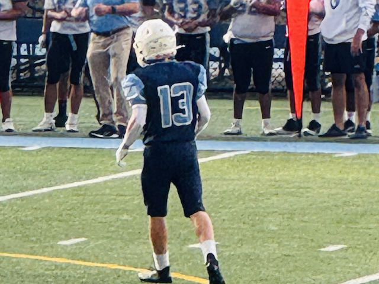

My name is Jonah Kauffman, and I am a 15 year old Freshman at Arlington Tech.
In this website, I will talk all about me, and facts that belong to me.
To start, I will state a quote
"It always feels impossible until its done."
-Nelson Mandela
